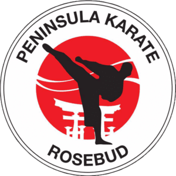

Karate Grading Syllabus
Select Belt:
Red Belt (8th Kyu)
Yellow Belt (7th Kyu)
Orange Belt (6th Kyu)
Green Belt (5th Kyu)
Purple Belt (4th Kyu)
Blue Belt (3rd Kyu)
Brown Belt (2nd Kyu)
Brown/Black Stripe (1st Kyu)
Black Belt